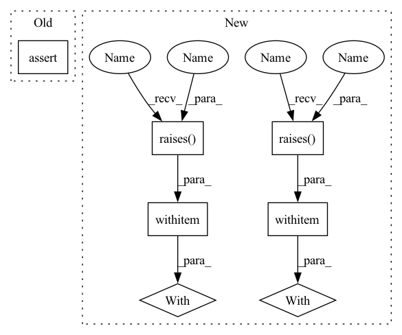

Pattern ID :734
Before Change
lfo_2_1 = voice_1.lfo_2(lfo_2_rate_1)
lfo_2_2 = voice_2.lfo_2(lfo_2_rate_2)
assert torch.all(lfo_1_1 == lfo_1_2)
assert torch.all(lfo_2_1 == lfo_2_2)
lfo_1_1 = voice_1.control_vca(lfo_1_1, lfo_1_amp_1)
After Change
voice_2 = Voice(synthconfig)
// Randomly initialized voices will have different results
with pytest.raises(AssertionError ):
self.run_voice(voice_1, voice_2)
voice_1.randomize(1)
with pytest .raises(AssertionError):
self.run_voice(voice_1, voice_2)
voice_2.randomize(1)
self.run_voice(voice_1, voice_2)
In pattern: SUPERPATTERN
Frequency: 7
Non-data size: 7
Instances Fragment ID: 3610487
Project Name: torchsynth/torchsynth
Commit Name: c85a25ca9b0712c0c2e0edbcea3ca94ed749b4ab
Time: 2021-04-09
Author: jordieshier@gmail.com
File Name: tests/test_determinism.py
M Class Name: TestDeterminism
N Class Name: TestDeterminism
M Method Name: test_voice_determinism(1)
N Method Name: test_voice_determinism(1)
M Parent Class:
N Parent Class:
M File Name: tests/test_determinism.py
N File Name: tests/test_determinism.py
M Start Line: 12
M End Line: 51
N Start Line: 11
N End Line: 28
Before Change
lfo_1_amp_2 = voice_2.lfo_1_amp_adsr(duration_2)
lfo_2_amp_2 = voice_2.lfo_2_amp_adsr(duration_2)
assert torch.all(lfo_1_rate_1 == lfo_1_rate_2)
assert torch.all(lfo_2_rate_1 == lfo_2_rate_2)
assert torch.all(lfo_1_amp_1 == lfo_1_amp_2)
assert torch.all(lfo_2_amp_1 == lfo_2_amp_2)
After Change
voice_2 = Voice(synthconfig)
// Randomly initialized voices will have different results
with pytest.raises( AssertionError):
self.run_voice(voice_1, voice_2)
voice_1.randomize(1)
with pytest .raises(AssertionError):
self.run_voice(voice_1, voice_2)
voice_2.randomize(1)
self.run_voice(voice_1, voice_2)
Fragment ID: 3610486
Project Name: turian/torchsynth
Commit Name: c85a25ca9b0712c0c2e0edbcea3ca94ed749b4ab
Time: 2021-04-09
Author: jordieshier@gmail.com
File Name: tests/test_determinism.py
M Class Name: TestDeterminism
N Class Name: TestDeterminism
M Method Name: test_voice_determinism(1)
N Method Name: test_voice_determinism(1)
M Parent Class:
N Parent Class:
M File Name: tests/test_determinism.py
N File Name: tests/test_determinism.py
M Start Line: 12
M End Line: 51
N Start Line: 11
N End Line: 28
Before Change
found_prop = True
if prop.serializable:
assert hasattr(builder, f"set_{attr}")
assert hasattr(builder, f"get_{attr}")
setter = getattr(builder, f"set_{attr}")After Change
assert getattr(builder, attr) == random_val
else:
// check set and get not supported
with pytest.raises( ValueError):
getattr(builder, attr)
with pytest .raises(ValueError):
setattr(builder, attr, random.random())
assert found_prop // ensure that modifier class is well formed and tests ran
Fragment ID: 3610485
Project Name: neuralmagic/sparseml
Commit Name: b4fcf9e05b34d01ffc7a316ad22c773003682db3
Time: 2021-11-16
Author: bfineran@users.noreply.github.com
File Name: tests/sparseml/sparsification/test_recipe_builder.py
M Class Name: AnonimousClass
N Class Name: AnonimousClass
M Method Name: test_modifier_builder_setters_getters(1)
N Method Name: test_modifier_builder_setters_getters(1)
M Parent Class:
N Parent Class:
M File Name: tests/sparseml/sparsification/test_recipe_builder.py
N File Name: tests/sparseml/sparsification/test_recipe_builder.py
M Start Line: 46
M End Line: 70
N Start Line: 46
N End Line: 68
Before Change
assert taskmodule.label_to_id["O"] == 0
task_encodings = taskmodule.encode(train_dataset, encode_target=encode_target)
assert len(task_encodings) == 8
if encode_target:
assert isinstance(task_encodings, Sequence)After Change
as_iterator = isinstance(train_dataset, (IterableDataset, Iterator))
if as_task_encoding_sequence:
if as_iterator:
with pytest .raises(
ValueError, match="can not return a TaskEncodingSequence as Iterator"
):
taskmodule.encode(
train_dataset, encode_target=encode_target, as_dataset=as_dataset
)
return
if as_dataset:
with pytest.raises(
ValueError, match="can not return a TaskEncodingSequence as a dataset"
):
taskmodule.encode(
train_dataset, encode_target=encode_target, as_dataset=as_dataset
)
return Fragment ID: 3610515
Project Name: christophalt/pytorch-ie
Commit Name: 179b6a156e8fe5d061f9aaa52cb61da6660494e8
Time: 2022-09-05
Author: ArneBinder@users.noreply.github.com
File Name: tests/data/test_dataset.py
M Class Name: AnonimousClass
N Class Name: AnonimousClass
M Method Name: test_dataset_with_taskmodule(6)
N Method Name: test_dataset_with_taskmodule(5)
M Parent Class:
N Parent Class:
M File Name: tests/data/test_dataset.py
N File Name: tests/data/test_dataset.py
M Start Line: 107
M End Line: 122
N Start Line: 111
N End Line: 165
Before Change
assert len(embeddings) == 2
assert len(not_found_words) == 0
assert list(embeddings.keys()) == ["man", "woman"]
assert not_found_words == []
assert np.array_equal(w2v["man"], embeddings["man"])After Change
model = WordEmbeddingModel(w2v, "weat_w2v", "")
WORDS = ["man", "woman"]
with pytest.raises( TypeError, match="word_set should be a list of strings, got"):
model.get_embeddings_from_word_set(None, preprocessor_options=1)
with pytest.raises(
TypeError,
match=
"word_preprocessor_options should be a dict of preprocessor options, got"):
model.get_embeddings_from_word_set(WORDS, preprocessor_options=1)
with pytest .raises(
TypeError,
match=
"secondary_preprocessor_options should be a dict of preprocessor options or None, got"
):
model.get_embeddings_from_word_set(WORDS, secondary_preprocessor_options=-1)
// ----------------------------------------------------------------------------------
// test basic opretaion of _get_embeddings_from_word_set Fragment ID: 3610481
Project Name: dccuchile/wefe
Commit Name: 702ae43a1024a79eb8570e43996113f9ac785afa
Time: 2020-11-16
Author: pablo.badilla@ug.uchile.cl
File Name: wefe/tests/test_word_embedding_model.py
M Class Name: AnonimousClass
N Class Name: AnonimousClass
M Method Name: test_get_embeddings_from_word_set(0)
N Method Name: test_get_embeddings_from_word_set(0)
M Parent Class:
N Parent Class:
M File Name: wefe/tests/test_word_embedding_model.py
N File Name: wefe/tests/test_word_embedding_model.py
M Start Line: 223
M End Line: 237
N Start Line: 170
N End Line: 191
Before Change
score = ROCAUCScore()
score.score_set(0.25, 0)
score.score_set(0.75, 0)
assert score.score == -float("inf")
y_true = [1, 1]
y_score = [0.25, 0.75]After Change
score = ROCAUCScore()
score.score_set(0.25, 0)
score.score_set(0.75, 0)
with pytest .raises(ValueError):
s = score.score
y_true = [1, 1]
y_score = [0.25, 0.75]
with pytest.raises(ValueError):
_roc_auc_score(y_true, y_score)
score = ROCAUCScore()
score.score_set(0.25, 1)
score.score_set(0.75, 1)
with pytest.raises( ValueError):
s = score.score
Fragment ID: 3610465
Project Name: explosion/spaCy
Commit Name: 75a202ce6506177d5de97b47bfd96fd3c7909503
Time: 2020-10-18
Author: svlandeg@users.noreply.github.com
File Name: spacy/tests/test_scorer.py
M Class Name: AnonimousClass
N Class Name: AnonimousClass
M Method Name: test_roc_auc_score(0)
N Method Name: test_roc_auc_score(0)
M Parent Class:
N Parent Class:
M File Name: spacy/tests/test_scorer.py
N File Name: spacy/tests/test_scorer.py
M Start Line: 337
M End Line: 347
N Start Line: 334
N End Line: 349
Before Change
ds.sample_transforms = inplace_transfo
_, t = ds[0]
_, t = ds[0]
assert t["label"] == "AB"
After Change
path = Path(mock_image_path)
ds = datasets.datasets.AbstractDataset(path.parent)
// Check target format
with pytest.raises( AssertionError):
ds.data = [(path.name, 0)]
img, target = ds[0]
with pytest.raises(AssertionError):
ds.data = [(path.name, dict(boxes=np.array([[0, 0, 1, 1]])))]
img, target = ds[0]
with pytest .raises(AssertionError):
ds.data = [(ds.data[0][0], {"label": "A"})]
img, target = ds[0]
// Patch some data Fragment ID: 3610479
Project Name: mindee/doctr
Commit Name: f9d3d787842a2267c4738d4c51f3e9a8532d3ba4
Time: 2022-09-02
Author: felixdittrich92@gmail.com
File Name: tests/common/test_datasets.py
M Class Name: AnonimousClass
N Class Name: AnonimousClass
M Method Name: test_abstractdataset(1)
N Method Name: test_abstractdataset(1)
M Parent Class:
N Parent Class:
M File Name: tests/common/test_datasets.py
N File Name: tests/common/test_datasets.py
M Start Line: 28
M End Line: 56
N Start Line: 25
N End Line: 67